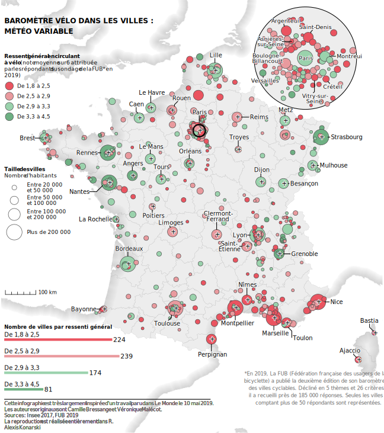

Unlike the previous post on styling the coastline, this one is not a tutorial. This is the code and the code only.
library(tidyverse)
library(glue)
library(sf)
library(stars)
library(ggrepel)
library(ggtext)
extrafont::loadfonts(device = "win")coast <- read_stars("static/inputs/info_fub/shaded_coast_raster")
france <- st_read("static/inputs/info_fub/departements-version-simplifiee.geojson") %>%
st_transform(2154)
#communes france geo
communes <- st_read("static/inputs/info_fub/communes-version-simplifiee.geojson") %>%
st_transform(2154) %>%
st_centroid()
#communes pop
communes_pop <- read_csv2("static/inputs/info_fub/pop_communes.csv") %>%
janitor::clean_names() %>%
mutate(depcom = paste0(code_departement, code_commune),
#change the code of Paris, Lyon, Marseille districts
depcom = case_when(
depcom %in% as.character(69381:69389) ~ "69123",
depcom %in% as.character(75101:75120) ~ "75056",
depcom %in% as.character(13201:13216) ~ "13055",
TRUE ~ depcom
),
population_totale = as.numeric(str_remove_all(population_totale, " "))) %>%
group_by(depcom) %>%
summarise(pop_municipale = sum(population_totale))
#feeling of safety
secu <- read_csv("static/inputs/info_fub/C_notes_data.csv") %>%
janitor::clean_names() %>%
filter(avg_n_tot_valide_net >= 50)#inner join communes and safety feeling + join population
fub <- communes %>%
inner_join(secu, by = c("code" = "depcom")) %>%
left_join(communes_pop, by = c("code" = "depcom")) %>%
dplyr::select(code, nom, note = avg_note_globale_moy, pop_municipale) %>%
mutate(city_size = cut(pop_municipale,
breaks = c(-Inf, 20000, 50000, 100000, 200000, Inf),
labels = c("Moins de 20 000",
"Entre 20 000 et 50 000",
"Entre 50 000 et 100 000",
"Entre 100 000 et 200 000",
"Plus de 200 000")),
city_size_int = cut(pop_municipale,
breaks = c(-Inf, 20000, 50000, 100000, 200000, Inf),
labels = c(2,
4,
6,
10,
16)),
city_size_int = as.numeric(as.character(city_size_int)),
secu = cut(note,
breaks = c(1.8, 2.5, 2.9, 3.3, 4.5),
labels = c("De 1,8 à 2,5",
"De 2,5 à 2,9",
"De 2,9 à 3,3",
"De 3,3 à 4,5")))
fub <- fub %>% bind_cols(as_tibble(st_coordinates(fub)))font <- "IBM Plex Sans Light"
palette_secu <- c("#ea5460", "#e99a9e", "#9ad2ac", "#6eb083")
count_plot <- ggplotGrob(
fub %>%
group_by(secu) %>%
summarise(count = n()) %>%
ggplot(aes(count, fct_rev(secu), fill = secu)) +
geom_col(width = 0.15) +
geom_text(aes(label = secu),
x = 0,
hjust = 0,
nudge_y = 0.3,
family = font,
size = 3.5) +
geom_text(aes(label = count),
hjust = 0,
nudge_x = 2,
family = "IBM Plex Sans SemiBold",
size = 3.8) +
scale_x_continuous(expand = expansion(c(0,0.07))) +
scale_fill_manual(values = palette_secu) +
coord_cartesian(clip = "off") +
labs(title = "Nombre de villes par ressenti général") +
theme_void(base_family = font, base_size = 7) +
theme(legend.position = "none",
plot.title = element_text(face = "bold"))
)paris <- france %>%
filter(code == "75") %>%
st_centroid() %>%
st_buffer(dist = 20000)
idf_fub <- fub %>%
st_intersection(paris)
idf_geo <- france %>%
st_intersection(paris)
my_pal <- function(range = c(1, 6)) {
force(range)
function(x) scales::rescale(x, to = range, from = c(0, 1))
}
city_labeller <- function(city) {
fct_recode(city,
"Saint-\nÉtienne" = "Saint-Étienne",
"Le Havre" = "Havre",
"Clermont-\nFerrand" = "Clermont-Ferrand",
"La Rochelle" = "Rochelle",
"Le Mans" = "Mans",
"Boulogne-\nBillancourt" = "Boulogne-Billancourt",
"Asnières-\nsur-Seine" = "Asnières-sur-Seine",
"Vitry-sur-\nSeine" = "Vitry-sur-Seine")
}
idf_nudges <- tribble(
~x_nudge, ~y_nudge, ~nom,
0, 0, "Paris",
0, -3000, "Versailles",
-8000, 2000, "Boulogne-Billancourt",
2000, 4000, "Saint-Denis",
-1000, 3900, "Argenteuil",
10000, 0, "Montreuil",
0, 0, "Naterre",
-550, -8200, "Vitry-sur-Seine",
2000, -3000, "Créteil",
-10000, 0, "Asnières-sur-Seine",
)
idf_fub_labels <- idf_fub %>%
inner_join(idf_nudges) %>%
mutate(label = city_labeller(nom))
idf_grob <-
ggplotGrob(
ggplot() +
geom_sf(data = paris,
fill = "lightgrey",
alpha = 0.4,
color = "black") +
geom_point(data = idf_fub,
aes(x = X,
y = Y,
size = city_size_int,
fill = secu,
group = rev(city_size)),
shape = 21,
color = "grey30") +
geom_text_repel(data = idf_fub_labels,
aes(x = X,
y = Y,
label = label,
point.size = city_size_int),
bg.color = "white",
color = "black",
nudge_x = idf_fub_labels$x_nudge,
nudge_y = idf_fub_labels$y_nudge,
segment.curvature = 1e-20,
min.segment.length = 0,
force = 0,
family = font,
lineheight = 0.8,
size = 3.3,
show.legend = FALSE) +
continuous_scale(
aesthetics = c("size", "point.size"),
scale_name = "size",
palette = my_pal(c(2,12))
) +
scale_fill_manual(values = palette_secu) +
theme_void() +
theme(legend.position = "none")
)nudges <- tribble(
~x_nudge, ~y_nudge, ~nom,
0, 50000, "Havre",
70000, 0, "Reims",
0, 40000, "Dijon",
0, 50000, "Nîmes",
-60000, 0, "Lyon",
-100000, -30000, "Nantes",
50000, -50000, "Toulon",
-70000, 0, "Rennes",
0, -50000, "Marseille",
-30000, -50000, "Toulouse",
0, 40000, "Angers",
60000, 0, "Nice",
0, 50000, "Bordeaux",
0, -50000, "Montpellier",
80000, 0, "Grenoble",
0, 50000, "Lille",
80000, 0, "Strasbourg",
-60000, 0, "Saint-Étienne",
-60000, 0, "Brest",
-10000, 45000, "Caen",
30000, 40000, "Rouen",
0, 35000, "Metz",
65000, 0, "Mulhouse",
65000, 0, "Besançon",
0, 60000, "Clermont-Ferrand",
-70000, 0, "Bayonne",
0, -50000, "Perpignan",
-70000, 0, "Rochelle",
-20000, 40000, "Bastia",
-30000, 30000, "Ajaccio",
0, 40000, "Mans",
0, 40000, "Tours",
0, -30000, "Poitiers",
-10000, 30000, "Limoges",
0, 40000, "Orléans",
0, 40000, "Troyes",
0, 60000, "Paris",
)
description <- glue("*En 2019, La FUB (Fédération française des usagers de la bicyclette) \\
a publié la deuxième édition de son baromètre des villes \\
cyclables. Décliné en 5 thèmes et 26 critères, il a \\
recueilli près de 185 000 réponses. Seules les villes comptant \\
plus de 50 répondants sont représentées.")
sources_credits <- glue("Cette infographie est très largement inspirée d'un travail \\
paru dans *Le Monde* le 10 mai 2019.<br>Les auteures originaux \\
sont Camille Bressange et Véronique Malécot.<br>\\
Sources : Insee 2017, FUB 2019<br>\\
La reproduction est réalisée entièrement dans R.<br>\\
Alexis Konarski")
fub_labels <- fub %>%
inner_join(nudges) %>%
mutate(label = city_labeller(nom))library(ggnewscale)
map <- ggplot() +
geom_stars(data = coast,
interpolate = TRUE,
show.legend = FALSE) +
scale_fill_gradient(low = "lightgrey",
high = "white",
na.value = NA) +
new_scale_fill() +
# geom_sf(data = st_as_sfc(st_bbox(coast)),
# fill = NA) +
geom_sf(data = france,
fill = "lightgrey",
alpha = 0.4,
color = "grey70",
size = 0.1) +
geom_point(data = fub,
aes(x = X,
y = Y,
size = city_size_int,
fill = secu,
group = rev(city_size)),
shape = 21,
color = "grey30") +
geom_text_repel(data = fub_labels,
aes(x = X,
y = Y,
label = label,
point.size = city_size_int),
bg.color = "white",
color = "black",
nudge_x = fub_labels$x_nudge,
nudge_y = fub_labels$y_nudge,
segment.curvature = 1e-20,
min.segment.length = 0,
force = 0,
family = font,
lineheight = 0.8,
size = 3.5,
show.legend = FALSE) +
shadowtext::geom_shadowtext(data = fub_labels,
aes(x = X,
y = Y,
label = "+"),
bg.color = "white",
bg.radius = 0.001,
size = 4,
color = "black",
family = "IBM Plex Sans SemiBold",
show.legend = FALSE) +
geom_sf(data = paris,
fill = NA,
color = "black",
size = 1) +
annotate("text", x = 11947.21, y = 7180000,
label = toupper("Baromètre vélo dans les villes :\nmétéo variable"),
family = "IBM Plex Sans",
fontface = "bold",
hjust = 0,
vjust = 0,
size = 4.3) +
annotate("text",
label = str_wrap(description, 60),
x = 1185000,
y = 6070000,
hjust = 1,
vjust = 1,
family = "IBM Plex Sans Condensed",
size = 3,
color = "grey40") +
annotate("richtext",
label = sources_credits,
fill = NA,
label.padding = grid::unit(rep(0, 4), "pt"),
label.color = NA,
x = 11947.21,
y = 5878000,
vjust = 0,
hjust = 0,
family = "IBM Plex Sans ExtraLight",
size = 3,
color = "grey40") +
annotate("segment",
x = 11947.21,
xend = 689000,
y = 5980000,
yend = 5980000) +
annotation_custom(idf_grob,
xmin = 800000,
xmax = 1200000,
ymin = 6915000,
ymax = 7285000) +
annotation_custom(count_plot,
xmin = 11947.21,
xmax = 420000,
ymin = 5980000,
ymax = 6230000) +
ggspatial::annotation_scale(
width_hint = 0.1,
style = "ticks",
pad_y = unit(0.32, "npc"),
text_family = font
) +
coord_sf(clip = "off", expand = 0) +
scale_alpha(range = c(0.001,0.2)) +
scale_fill_manual(values = palette_secu,
name = glue("**Ressenti général en circulant<br>
à vélo** (note moyenne sur 6 attribuée<br>
par les répondants du sondage de la FUB* en<br>
2019)")) +
continuous_scale(aesthetics = c("size", "point.size"),
scale_name = "size",
palette = my_pal(c(2,12)),
name = glue("**Taille des villes**<br>
Nombre d'habitants"),
labels = c("Moins de 20 000",
"Entre 20 000\net 50 000",
"Entre 50 000\net 100 000",
"Entre 100 000\net 200 000",
"Plus de 200 000")) +
guides(fill = guide_legend(order = 1,
override.aes = list(size = 6)),
size = guide_legend(order = 2,
keyheight = 1.5)) +
theme_void(base_family = "IBM Plex Sans") +
theme(legend.position = c(0.008, 0.97),
legend.justification = c("left", "top"),
legend.title = element_textbox_simple(size = 9),
legend.margin = margin(t = 70))
ggsave("static/plots/info_fub/final.svg",
plot = map,
width = 9,
height = 10.16,
dpi = 320)
ggsave("static/plots/info_fub/final.png",
plot = map,
width = 22,
height = 24.83,
dpi = 500,
units = "cm")